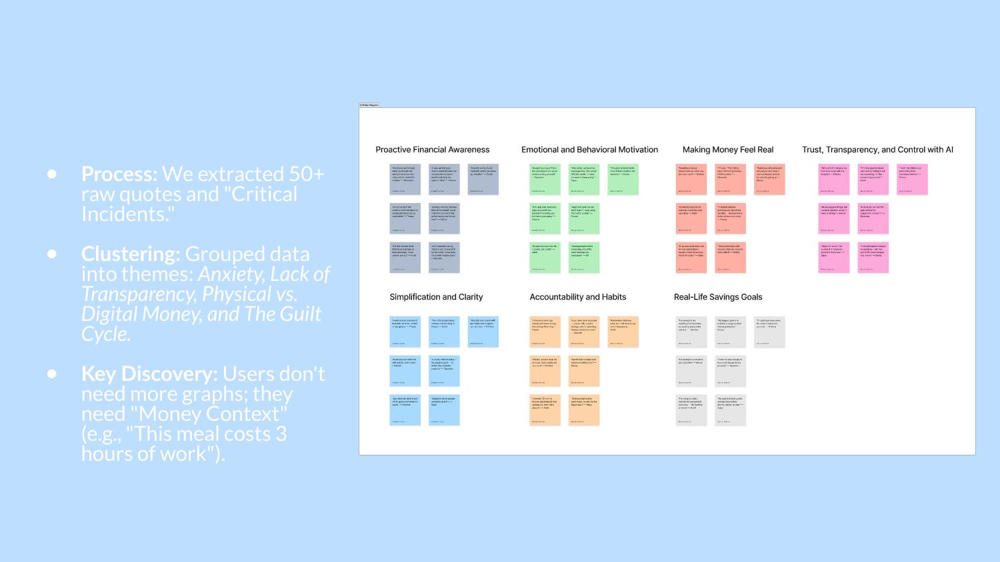
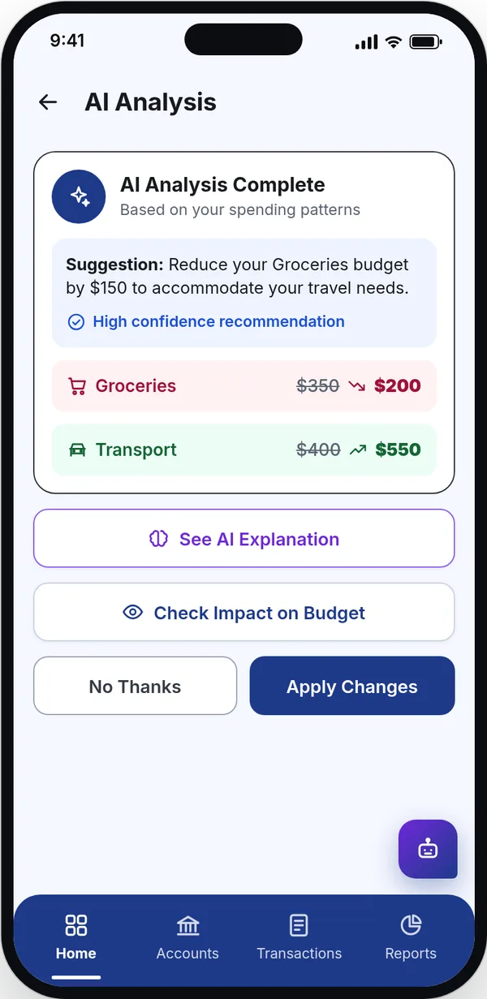
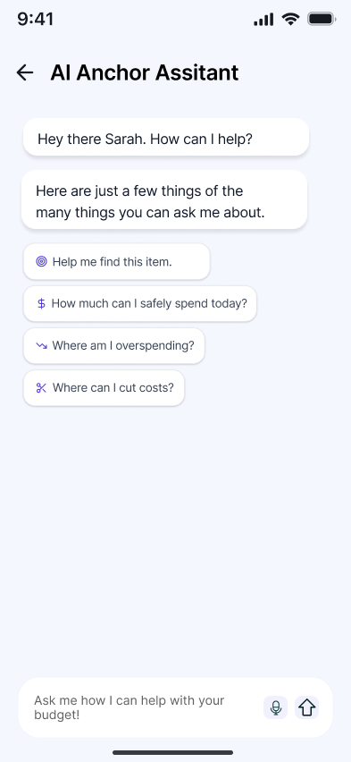

In the moment
Help before a purchase, not in next month's report.
IRB-approved study with 24 participants. 6 of 8 testers fully trusted the AI's advice.

The short version
The problem. Tapping a card doesn't feel like spending, and most budgeting apps only chart the past, which people avoid opening.
What I did. Led research and designed the AI coach and budget flows: a coach that speaks up before you spend and explains why.
01 · The challenge
Cards and digital wallets remove the small pain of paying. Forgotten subscriptions keep charging. And most money apps feel like a report card, so people stop opening them.
“I spend more when I'm bored. Surfing online equals unnecessary spending.”Research participant
When does the help arrive?
A typical money app
Help arrives after the money is gone
Money Anchor
Help arrives before you spend
02 · The goals
Help before a purchase, not in next month's report.
Every AI suggestion shows why, and how sure it is.
The AI suggests. The person decides.
03 · Finding the pattern
I summarized and analyzed 40+ research papers with AI, and we benchmarked 10 budgeting apps. Then we interviewed 8 people aged 20 to 32 and ran 4 focus groups with 16 more.
People don't need more graphs. They need money in context.
Forgotten subscriptions were a big, silent leak.
People would trust AI only if it explained itself and left them the final say.
The trust condition
People would trust AI only if it explained itself and left them the final say. That became a requirement for every AI screen.
From 40+ papers to 10 features in the prototype

Before
Tap a card, money feels unreal.
Subscriptions keep charging.
Silent leakCharts of the past, if at all.
Biggest stall22% task success, round one
After
Ask the coach before a purchase.
In the momentSuggestion with reason and confidence.
Trust fixApply, or say no thanks.
Your call100% task success, round two
Plot twist
It sat in the bottom menu as one more tab. We made it a floating button on every screen, and AI task success reached 100% in round two.
Rejected
Testers misread them. Labeled buttons, Adjust Income and Add Expense, took misclicks from 29% to 0%.
04 · The solution
Led research and designed the AI coach and budget flows: a coach that speaks up before you spend and explains why.
Three steps from a question to a decision
Each AI suggestion shows why and how confident it is, with Apply and No thanks side by side, so people stay in control.
✓ 6 of 8 fully trusted the AI

You can ask the coach about a purchase in the moment, and it compares products, prices and stores within your budget.
✓ Everyone finished the shopping task

Alerts stay gentle, because people said apps that scold them make them avoid money altogether.
✓ 7 of 8 would rethink a purchase after an alert
05 · The impact
Behavior told the real story: testers rated navigation 4.4 out of 5 while still missing buttons.
Round one vs round two, 8 testers each
Everyone finished the shopping task
6 of 8 fully trusted the AI
7 of 8 would rethink a purchase after an alert
| Measure | Before | After |
|---|---|---|
| Task success exploring the app | 22% | 100% |
| Misclicks on that task | 29% | 0% |
| Fully trusted the AI's advice | not measured | 6 of 8 |
Still open: adjusting a budget caused 54.7% misclicks in round two. We added Adjust to each budget's menu but didn't test it again.
Watch, don't just ask. What people do in a test matters more than how they rate it.
06 · What’s next
Ideas, not built.
A ten-second spoken summary of the week, for people who avoid opening money apps.
Fix a wrong category with one tap, so suggestions get more personal over time.
Next project
Human Factors course · Research · MobilityFinding what breaks EV charging, in 16,767 reviews